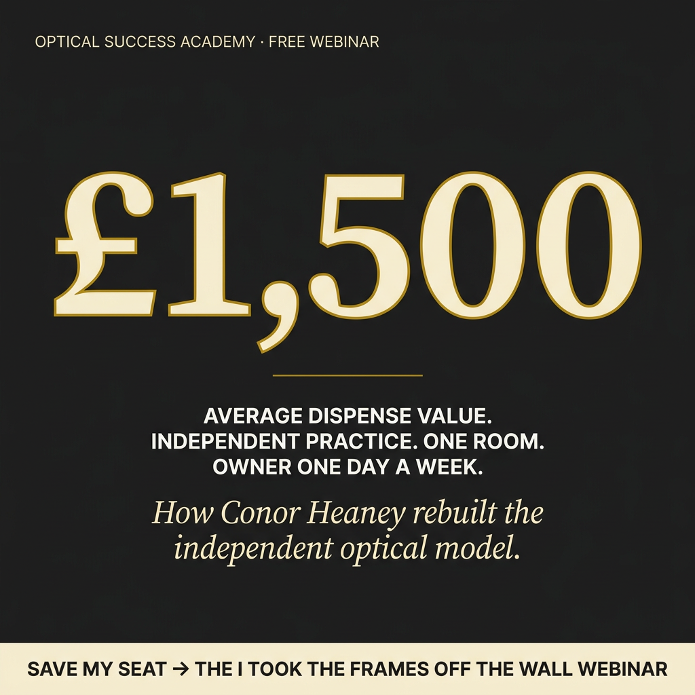
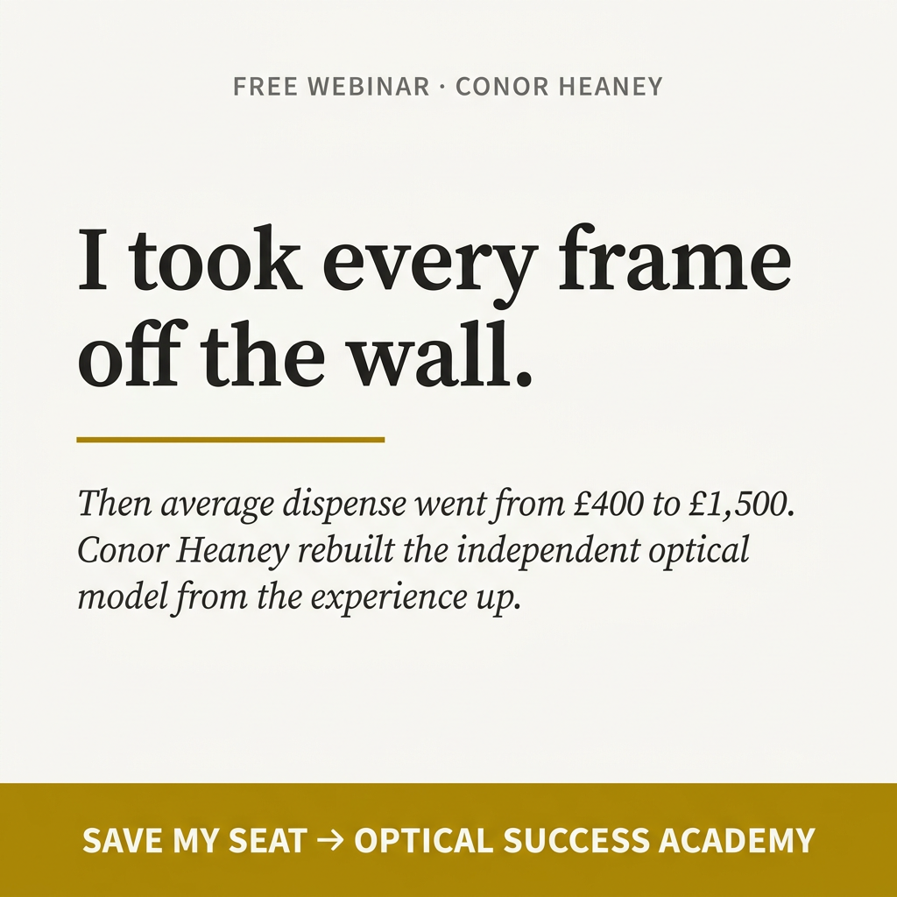
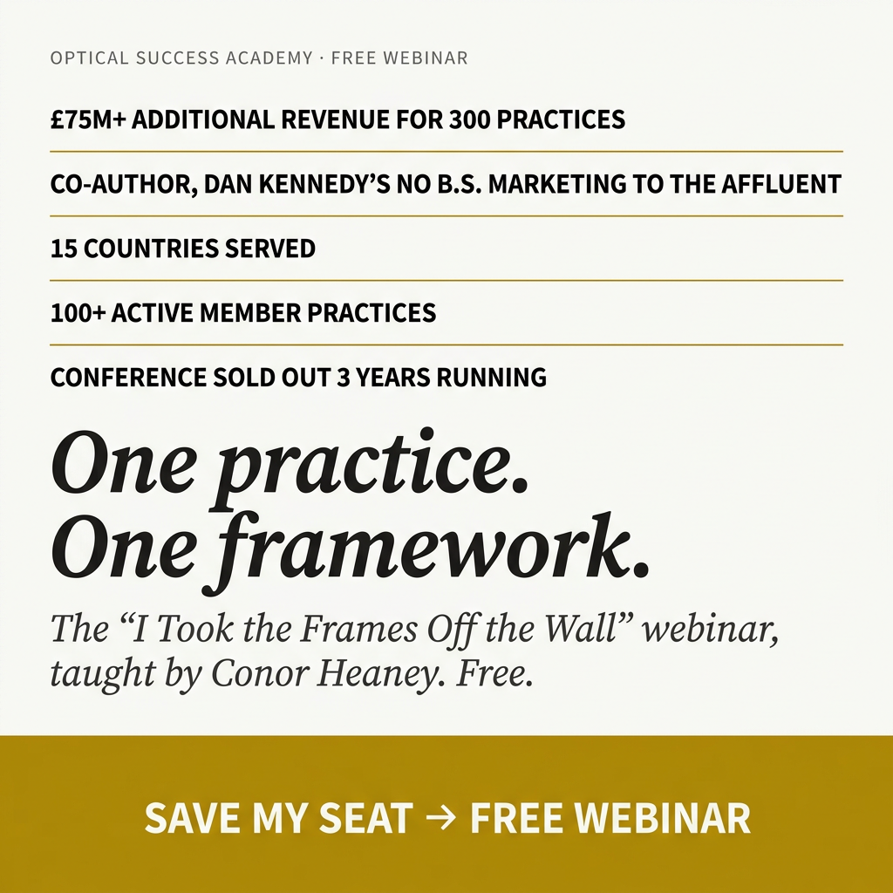
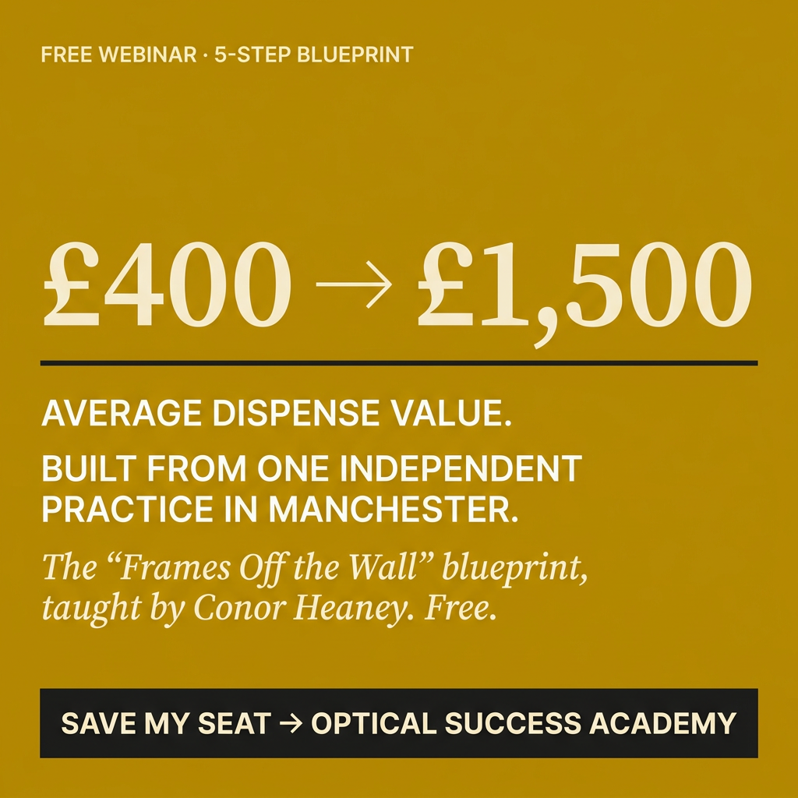

Static Ads + Video Scripts to Drive Your Webinar Registrations
You already run a free webinar and the funnel works. The missing piece is paid acquisition. Here are 4 static ads and 3 video scripts built to drive cold traffic into your existing webinar registration page. The statics run as-is. The scripts you film on your phone in one or two takes; we handle editing, ad build, targeting, and optimization.
4 cold-traffic statics
Square 1:1 format, brand-matched to Jones And Co + Optical Success Academy (warm off-white, deep charcoal, dark-gold accent). Typography-only, no stock photos. Each ad uses a distinct hook archetype so you can A/B test them in one ad set and let Meta find the winner.




All 4 run cold in one ad set on equal budget for the first 2 weeks. After that we scale the top 2 to 80% of budget and use the contrarian for retargeting newsletter and podcast-listener lookalikes who did not convert.
3 Video Ad Scripts
These drive webinar registrations. You film them on your phone. 30-60 seconds each. We handle editing, ad build, targeting, and optimization.
"I took every frame off my walls. My staff thought I was crazy. My average dispense went from 400 to 1,500 pounds."
Every optical practice in the world displays hundreds of frames on walls. Patients walk in, stare at the options, feel overwhelmed, grab a few pairs, try them on in a mirror, and settle for something they feel uncertain about. That process is the single biggest reason average dispense values stay low. I replaced it with something completely different. Fewer than 12 frames visible at any time. When patients arrive, a trained dispensing optician sits with them for a 45-minute styling consultation. They learn about the patient's lifestyle, prescription, and style. Then they handpick a curated selection specifically for that person. The patient does not go to the frames. The frames come to the patient. Average dispense: 1,500 pounds. Conversion rate: 80 percent. Nearly 4 in 10 buy multiple pairs. 503 Google reviews at 5.0 stars. Jones And Co went from 390,000 to 1.5 million in revenue with one consulting room and 12 staff. I spent over 100,000 pounds studying how the best retailers in the world sell. Not optical retailers. Hotels, fashion houses, luxury brands. Then I adapted it for independent optics. 300 practices across 15 countries have now implemented this system through the Optical Success Academy. I am running a free training on this approach. Click below to register.
"Shockat Patel's average dispense was 109 pounds. Within months of joining, it was 299. His revenue grew 59 percent and he cut his working week to four and a half days."
Shockat is not unusual. Rachel Murray in Sligo went from 200 to 520 average dispense and grew 41 percent in 12 months. Helen Corson saw a 50 percent sales increase with a best single dispense of 1,400 pounds. Dan Sanders added 200K in revenue while dropping to a four-day week. Across 300 member practices in 15 countries, the Optical Success Academy has generated 75 million pounds in additional optical revenue. Not projections. Tracked results from independent optometrists and opticians who implemented the system. My name is Conor Heaney. I built Jones And Co from 390K to 1.5 million with a 1,500 average dispense, one consulting room, and one day a week of my time. Dan Kennedy invited me to write a chapter in his bestselling book on marketing to the affluent. Everything I teach is what I do in my own practice first. I am hosting a free training on the system behind these results. Register below.
"Independents used to own 70 percent of the optical market. Today it is under 20 percent. 300 practices are closing every year. And the ones trying to compete with Specsavers on price are closing fastest."
You will never beat the chains on price, convenience, or marketing spend. They will always have more stores, more budget, more brand recognition. Trying to match them is how independents die. But there is one thing the chains can never replicate, and it is the only thing that matters: the experience of choosing glasses with a trained expert who knows your face, your lifestyle, and your prescription, in an environment that feels like a boutique hotel instead of a high street shop. I built Jones And Co on that principle. Patients book appointments like they would with a lawyer or an accountant. They sit for 45 minutes with a dispensing optician who curates a selection just for them. The average sale is 1,500 pounds. Specsavers will never offer that because their model structurally cannot. 300 independent practices in 15 countries are now implementing this approach through the Optical Success Academy. 75 million pounds in additional revenue generated. I am running a free training on building an independent practice that the chains cannot compete with. Click below to register.
You film these on your phone in your practice or a professional setting. 1-2 takes each. We handle editing, ad creative assembly, targeting, and campaign optimization. All three scripts drive to the same webinar registration page.
The numbers
Ads drive webinar registrations. The webinar qualifies and educates. Attendees apply for OSA membership or book strategy calls. Membership-model coaching means every new member produces recurring revenue.
| Metric | Conservative | Moderate |
|---|---|---|
| Monthly ad spend | $1,500 | $1,500 |
| Cost per webinar registration | $15 | $10 |
| Webinar registrations / month | 100 | 150 |
| Show-up rate | 30% | 40% |
| Live attendees | 30 | 60 |
| Application / call booking rate | 10% | 15% |
| Qualified applications / month | 3 | 9 |
| New members / month | 2 | 4 |
| Annual membership value (est.) | $3,000-$6,000 | $3,000-$6,000 |
| Annualized new revenue / month | $6,000-$12,000 | $12,000-$24,000 |
| Monthly ROAS (annualized) | 4-8x | 8-16x |
Membership-based coaching produces compounding returns. Each new member adds recurring revenue. After 6 months of sustained ads, you're stacking 12-24 active members from paid acquisition alone, on top of organic growth. OD Staff Training has sustained this model for 2 years.
Competitor context
| Coach / Company | Focus | Paid Funnel Status |
|---|---|---|
| The Optical Mentor / Abbas | Optical business coaching | 48 active Facebook ads. Largest spender in optometry coaching. |
| OD Staff Training | Practice management consulting | 22 active Facebook ads. Sustained ~2 years. |
| Visionary Practice Group | Financial + operational consulting | 21 active Facebook ads. Full paid funnel. |
| Direct OD | Membership plans for ODs | 7 active Facebook ads. |
| Conor Heaney / Optical Success Academy | Practice growth + eyewear experience. 100+ members, $1.4M practice, Dan Kennedy author. | Strongest results-backed methodology. Zero paid acquisition. |
The Optical Mentor runs 48 ads selling similar concepts but without your track record. $500K to $1.4M with documented member results (59% growth, 41% growth, average dispense tripling) is a stronger proof story than any competitor currently running paid traffic. The Dan Kennedy co-authorship adds immediate credibility to cold audiences.
"He's built a whole system for us that actually works and has been delivering consistently for months. That kind of consistency is huge when you're running webinars and workshops."
Veronika Oquendo · Operations Director, Passive Workforce · Online Education
"The value I've received is far and away in excess of what I had to pay. I'm a lot more excited about the possibility of scaling the business."
Matthew Farquhar · Founder, FR Consulting · Career Coaching
"There is a mountain difference in terms of the returns. It was a game changer having Dustin on my side."
Abraham Anjarkouchian · Dieting & Menopause Online Coach
Book a time
Quick 30-minute call. I walk you through the statics, the scripts, the targeting strategy, and how the math works.